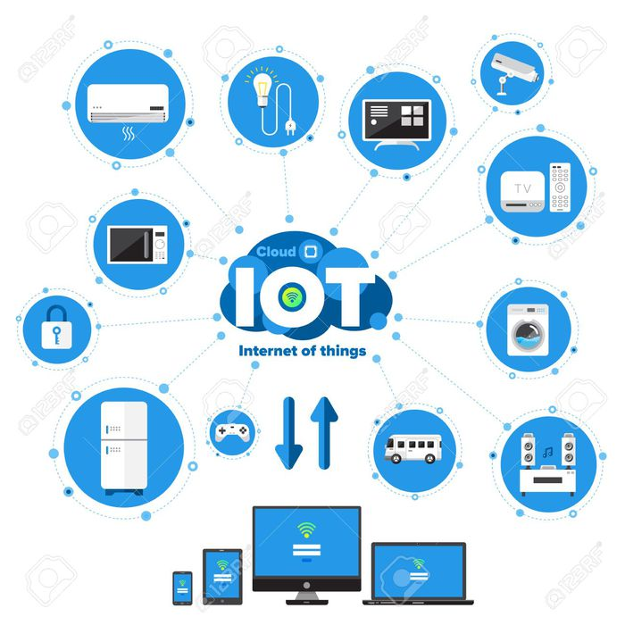
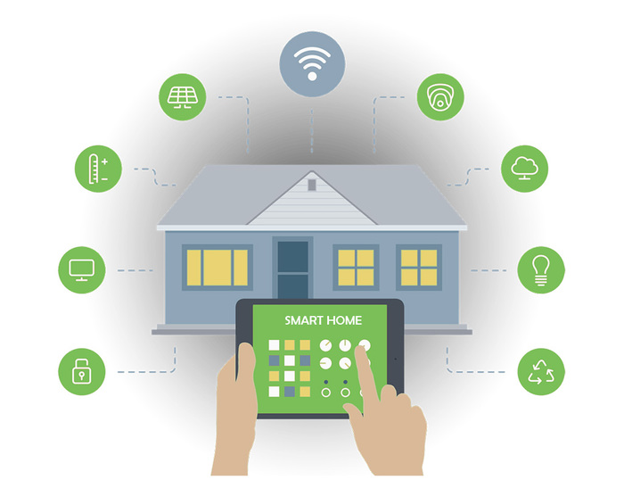

Considering the wide usage of the term IoT or Internet-of-Things in the modern world, we must understand the origin, meaning and the relevance of this technology in our everyday life. This article aims to give you a basic understanding of this frequently used term.
The idea behind this concept is to wirelessly connect all appliances over the internet, gather data from the sensors of the devices and take action on that data. This can be thought of a room which automatically adjusts lighting and cooling. Simply said this technology aims to make our future more efficient and comfortable.
The Internet of Things is the network of physical devices, vehicles, home appliances and other items embedded with electronics, software and censors which enables these objects to connect and exchange data over the Internet.
The IoT brings together mobiles, homes and embedded devices by using a common platform, the Internet. The data collected from these devices are analyzed and modeled with the goal of discovering useful information to support decision-making.
Data Analytics plays a crucial role in the field of IoT. Related devices are connected to form an intelligent system, and further connected to create an intelligent system of systems. The data collected from these systems are analyzed and are used to transform our lives.
IoT sees its application in various fields ranging from home automation, medicine to industries. Production speeds can be increased and more efficient products can be developed in factories. IoT also plays a key role in optimization of energy generation and consumption. Home automation is the process of connecting home electronic and electrical appliances automatically using various control system techniques. It involves the use of Wifi, Arduino board, raspberry pi and various other microcontrollers and computers in order to set up an intelligent system.
Let's assume a simple example, pictures which are taken by a smart traffic camera can be used to analyze the traffic for congestions, accidents and weather conditions. The collected data from numerous such systems are then sent to data centers. Further congestion and inconvenience are avoided by redirecting the traffic.
These connected devices form an ever-expanding system of systems, acquiring large amounts of data and improving the precision of decisions taken by analyzing the collected data.
The Internet of Things is a pretty simple yet powerful concept which can be implemented by amateurs to experts. It presents a massive window for enthusiasts to pursue their careers and promises substantial growth and a large number of opportunities as it yet to be applied to most of the devices around us.